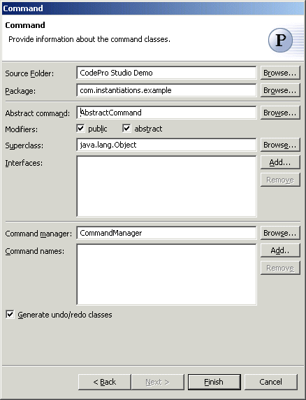

Command Pattern
Also known as: Action, Transaction
The  Command Pattern encapsulates a request as an object, thereby letting you parameterize
clients with different requests, queue or log requests, and support undoable operations.
Sometimes it's necessary to issue requests to objects without knowing anything about the
operation being requested or the receiver of the request.
Command Pattern encapsulates a request as an object, thereby letting you parameterize
clients with different requests, queue or log requests, and support undoable operations.
Sometimes it's necessary to issue requests to objects without knowing anything about the
operation being requested or the receiver of the request.
The Command pattern lets toolkit objects make requests of unspecified application objects by turning the request itself into an object. This object can be stored and passed around like other objects. The key to this pattern is an abstract Command class, which declares an interface for executing operations. In the simplest form this interface includes an abstract Execute operation. Concrete Command subclasses specify a receiver-action pair by storing the receiver as an instance variable and by implementing Execute to invoke the request. The receiver has the knowledge required to carry out the request.
Wizard

| Option | Description | Default |
| Source folder | Enter a source folder for the new class. Either type a valid source folder path or click Browse to select a source folder via a dialog. | The source folder of the element that was selected when the wizard was started. |
| Package | Enter a package to contain the new class. Either type a valid package name or click Browse to select a package via a dialog. | The package of the element that was selected when the wizard was started. |
| Abstract command | Type or click Browse to select an abstract command class. | <AbstractCommand> |
| Modifiers | Select one or more access modifiers for the new class.
|
public, abstract |
| Superclass | Type or click Browse to select a superclass for the abstract command class. | <java.lang.Object> |
| Interfaces | Click Add to choose interfaces that the command classes implement. | <blank> |
| Command manager | Type or click Browse to select a command manager class. | <CommandManager> |
| Command names | Click Add to enter the names of the commands that should be created | <blank> |
| Generate undo/redo classes | Determines whether Undo and Redo classes are generated . |
<true> |
Applicability
Use the Command pattern when you want to
- parameterize objects by an action to perform. You can express such parameterization in a
procedural language with a callback function, that is, a function that's
registered somewhere to be called at a later point. Commands are an object-oriented
replacement for callbacks.
- specify, queue, and execute requests at different times. A Command object can have a
lifetime independent of the original request. If the receiver of a request can be
represented in an address space-independent way, then you can transfer a command object
for the request to a different process and fulfill the request there.
- support undo. The Command's Execute operation can store state for reversing its effects
in the command itself. The Command interface must have an added Unexecute operation that
reverses the effects of a previous call to Execute. Executed commands are stored in a
history list. Unlimited-level undo and redo is achieved by traversing this list backwards
and forwards calling Unexecute and Execute, respectively.
- support logging changes so that they can be reapplied in case of a system crash. By
augmenting the Command interface with load and store operations, you can keep a persistent
log of changes. Recovering from a crash involves reloading logged commands from disk and
reexecuting them with the Execute operation.
- structure a system around high-level operations built on primitives operations. Such a structure is common in information systems that support transactions. A transaction encapsulates a set of changes to data. The Command pattern offers a way to model transactions. Commands have a common interface, letting you invoke all transactions the same way. The pattern also makes it easy to extend the system with new transactions.
Additional Resources
http://c2.com/cgi/wiki?CommandPattern